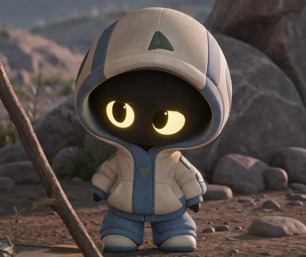
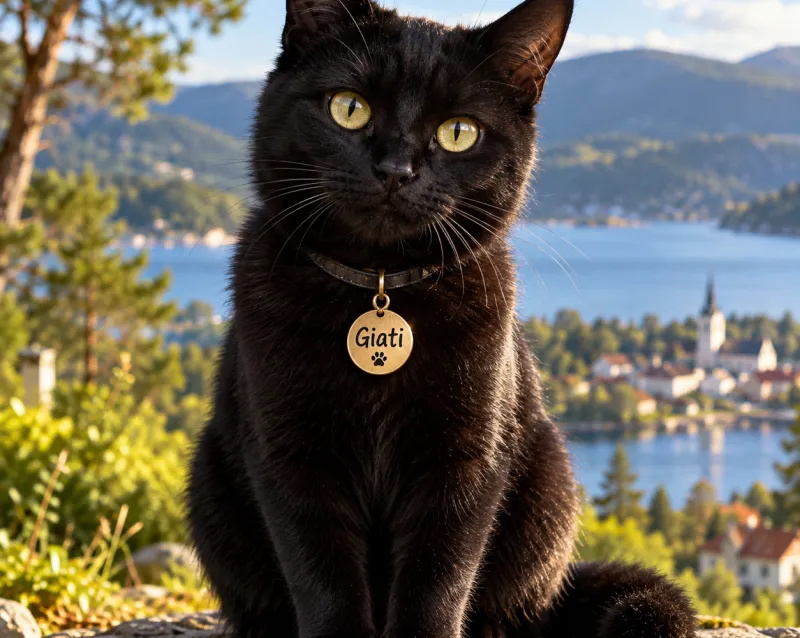
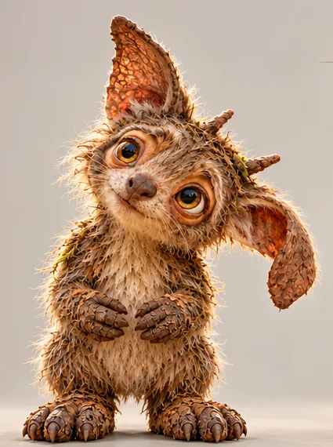

Ingen reklame, og ingen sporing eller cookies på giati.no.
Filmene er merket «laget for barn» på YouTube. Da er kommentarer og personlig tilpasset reklame slått av.
Vi sier rett ut når tekst eller bilder er laget med hjelp av KI.
Alt prøves på barn i familien før det kommer hit.
TA MED DERE ETT SPØRSMÅL
Hvorfor er himmelen blå?
Spør hverandre. Lytt ferdig. Undre dere litt til.
GIATIKIDS · FIGURENE
Møt Pika, Giati og Tiniak
Én som lurer på alt, én som vet svaret, og én som ser det alle andre går forbi.

Pika
Pika kommer fra rommet og har landet i en skog like ved en liten by. Alt her er nytt: lysene, skyggene, regnet og menneskene. Pika lurer på alt, og spør om det vi andre tar for gitt.
Første film kommer

Giati
Giati er en svart katt som vet alt. Katten blir med Pika gjennom et landskap fullt av ting å undre seg over.
Med i Pika-filmene

Tiniak
Tiniak bor i skogen og kjenner hemmelighetene alle andre går forbi: en dråpe, et spor, en lyd under mosen.
Giatini er sulten, og i epletreet henger det mange røde epler. Så kommer Pinnsvinet, Ekornet, Lille Fugl og Kaninen. Hvor mange epler trenger de? Tell med Giatini fra 1 til 5.
▶
Se
Filmen hentes fra YouTube først når du trykker play. Før det lastes ingenting derfra, og etterpå starter ingen andre filmer av seg selv.
?
Snakk om det etterpå
2–5 år
Hvor mange venner kom til Giatini?
Hvilket dyr likte du best?
Kan du vise fem fingre, slik Giatini gjør?
6–9 år
Hva om det kom én venn til? Ville eplene vært nok?
Hvordan kan man dele når det ikke er nok til alle?
Hvor mange epler trenger vi hvis alle i familien skal få ett?
Prøv sammen
Tell fem ting hjemme: skjeer, sko eller kosedyr.
Del ut én ting til hver i familien. Er det nok til alle?
Vis fem fingre, slik Giatini gjør på slutten.
Til deg som voksen
Filmen øver på å telle fra 1 til 5. Barnet oppdager at fem epler og fem venner betyr at alle får ett hver. Det er en tidlig forståelse av at tall hører sammen med mengder.
!
Les
!
Les · kommer
Boka til filmen
Vi lager en bok om «Giatini og de fem eplene», så dere kan lese det dere så sammen.
Filmen hentes fra YouTube først når du trykker play. Før det lastes ingenting derfra, og etterpå starter ingen andre filmer av seg selv.
?
Snakk om det etterpå
2–5 år
Hvilke farger husker du fra regnbuen?
Hvilken farge liker du best?
Hvis du kunne ri på en enhjørning, hvor ville du dratt?
6–9 år
Når ser vi regnbuer? Hva trenger vi?
Hvorfor tror du regnbuen har så mange farger?
Kan man gå helt bort til en regnbue?
Prøv sammen
Stå med ryggen mot sola og spray vann fra en sprayflaske eller hageslange. Ser dere en liten regnbue?
Til deg som voksen
En regnbue kommer når sola skinner bak deg og det regner foran deg. Hver dråpe deler sollyset i farger. Man kan aldri gå helt bort til den, for den flytter seg med deg.
Her skriver vi om hvordan Giati blir til: figurene, bøkene og spørsmålene vi stiller underveis.
Hvorfor heter det Giati?
Giati er gresk og betyr «hvorfor». Det er det minste og viktigste spørsmålet et barn stiller, og det er derfor vi valgte det som navn.
Hver film og bok følger det samme mønsteret: først et spørsmål (?), så undersøker vi sammen, og til slutt forstår vi noe nytt (!). I fortellingene er Giati også en svart katt som vet alt, og som blir med Pika gjennom alt det nye.
Vi tror ikke et godt spørsmål er verdt mindre enn et godt svar. Derfor har vi laget et sted der det er lov å lure.
OM GIATI
Alt starter med «hvorfor?»
Giati lager filmer, bilder og bøker som vekker nysgjerrighet hos barn, ungdom og voksne.
Hva vi gjør
Vi lager og publiserer film og video: læringsfilmer, animasjon, kortfilm og dokumentar.
Vi lager og selger bilder og illustrasjoner, som trykk, plakater og digitale filer.
Vi gir ut bøker, både på papir og digitalt.
Vi utvikler egne figurer og fortellinger. Etter hvert kan de bli til lisenser og varer.
Figurene
Pika kommer fra rommet og lurer på alt.
Giati er den svarte katten som vet alt, og som blir med Pika.
Tiniak bor i skogen og viser hemmelighetene vi går forbi.
Aldersgrupper
2–5 år og 6–9 år først.
9–16 år kommer senere.
Verdiene
Nysgjerrighet. Et godt spørsmål er verdt like mye som et godt svar.
Ærlighet. Vi sier det vi vet, og det vi ikke vet.
Trygghet. Barn skal kunne være her uten at noen følger med.
Kvalitet. Vi bruker den tiden det tar å gjøre det ordentlig.
Reglene våre
Barnelinja har egne regler. Vi samler ikke inn data fra barn, og vi retter ikke reklame mot dem. Hele denne nettsiden bruker verken sporing eller cookies.
KONTAKT
Si fra
Har du et spørsmål, en idé eller lyst til å samarbeide? Send oss en e-post.